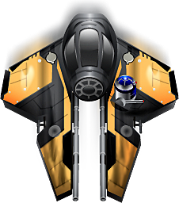

Meteors
A simple starting point game


Michael Kleinhenz
Christoph Jerolimov
Heads Up
Creating the Game
Adding 2D Elements
Attaching Controls
Applying Physics
Using Particles
Running on Targets
### Target Launchers
Each LibGDX target application has a native launcher that gets passed an instance of com.badlogic.gdx.Game:
...
new LwjglApplication(new MeteorGame(), cfg);
...
### Creating the Game
public class MeteorGame extends Game {
@Override
public void create() {
// create view for level
LevelScreen levelScreen = new LevelScreen();
setScreen(levelScreen);
}
...
}
### A Screen and a Stage
public abstract class GameScreen implements Screen {
public GameScreen() {
super();
stage = new Stage(WIDTH, HEIGHT, true);
}
...
### Adding Camera and Render Loop
public void show() {
OrthographicCamera cam =
new OrthographicCamera(WIDTH, HEIGHT);
cam.position.set(WIDTH / 2, HEIGHT / 2, 0);
stage.setCamera(cam);
}
public void render(float delta) {
stage.act(delta);
stage.draw();
}
### Creating Actors
public class GameObject extends Actor {
public GameObject(float x, float y,
float width, float height,
TextureRegion textureRegion) {
setWidth(width);
setHeight(height);
this.textureRegion = textureRegion;
...
}
### Adding Action(s)
public GameObject reveal(float delay,
float fadeInDuration) {
addAction(sequence(
alpha(0),
delay(delay),
fadeIn(fadeInDuration)
));
return this;
}
### Making Actors act
@Override
public void act(float delta) {
super.act(delta);
// rotate, translate, or KI movement
}
### Making Actors render
@Override
public void draw(SpriteBatch batch,
float parentAlpha) {
batch.draw(textureRegion, getX(), getY(),
getOriginX(), getOriginY(),
getWidth(), getHeight(),
getScaleX(), getScaleY(),
getRotation());
}
### Making Actors appear on Stage
ship = new GameObject(WIDTH / 2, HEIGHT / 2,
256f, 256f, texture);
getStage().addActor(ship);
ship.reveal(0f, 1f);
### Adding Controls
public void act(float delta) {
if(Gdx.input.isKeyPressed(Keys.DPAD_LEFT)) {
...
}
if(Gdx.input.isKeyPressed(Keys.DPAD_RIGHT)) {
}
...
}
### Adding (Touch) Controls
setTouchable(Touchable.enabled);
addListener(new ActorGestureListener() {
@Override
public void tap(InputEvent event, float x, float y,
int count, int button) {
...
}
});
### Creating the Physics World
public LevelScreen() {
super();
world = new World(new Vector2(0, 0), false);
}
@Override
public void render(float delta) {
world.step(delta, 6, 2);
super.render(delta);
}
### Adding Bodies to Actors
BodyDef bodyDef = new BodyDef();
bodyDef.type = BodyType.DynamicBody;
bodyDef.position.set(x, y);
body = world.createBody(bodyDef);
FixtureDef fixtureDef = new FixtureDef();
fixtureDef.density = 0.1f;
fixtureDef.friction = 0.4f;
fixtureDef.restitution = 0.6f;
BodyEditorLoader bodyShapes = new BodyEditorLoader(
Gdx.files.internal("data/shapes.json"));
bodyShapes.attachFixture(body, "Ship", fixtureDef);
### Applying Force to Actors
body.applyForce(force, body.getWorldPoint(localPoint));
### Managing Collisions
world.setContactListener(new ContactListener() {
public void beginContact(Contact contact) {
Fixture fA = contact.getFixtureA();
Fixture fB = contact.getFixtureB();
if (ship.getBody().equals(fA.getBody()))
log("Actor A is the Ship!");
}
});
### Adding Particles
ParticleEffect effect = new ParticleEffect();
effect.load(Gdx.files.internal("data/particle.p"),
Gdx.files.internal("data"));
### Positioning Particles
public void act(float delta) {
super.act(delta);
effect.update(delta);
effect.setPosition(
effectPosition.x,
effectPosition.y);
}
### Drawing Particles
public void draw(SpriteBatch spriteBatch,
float parentAlpha) {
super.draw(spriteBatch, parentAlpha);
float delta = Gdx.graphics.getDeltaTime();
effect.draw(spriteBatch, delta);
}
Now it's your turn!
https://bitbucket.org/kleinhenz/meteors
www.goquestor.com